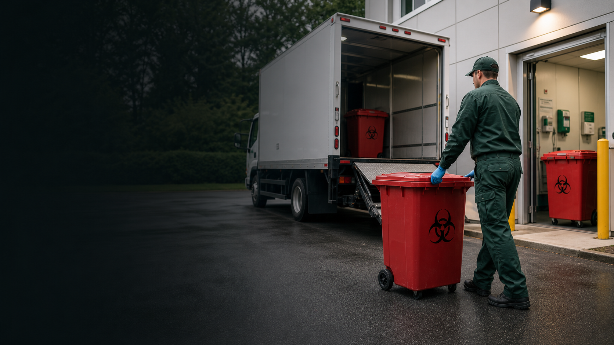

Medical Waste Collection
Pickup for regulated red bag waste and contaminated materials.
DOTRecords

Services
Programs for regulated waste collection, sharps containers, pharmaceutical waste support, compliance training, and facility waste audits.
Built around facility operations
United Medical Waste helps healthcare teams simplify waste handling without losing sight of documentation, staff safety, or container control.
Pickup for regulated red bag waste and contaminated materials.
Container supply, scheduled swaps, and puncture-risk waste handling.
Medication waste programs with secure handling guidance.
Training support for staff who need practical compliance refreshers.
Review service frequency, container usage, documentation gaps, and cost-saving opportunities.
Start with a review